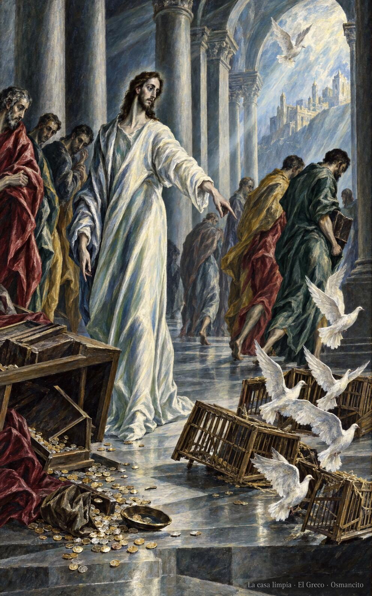
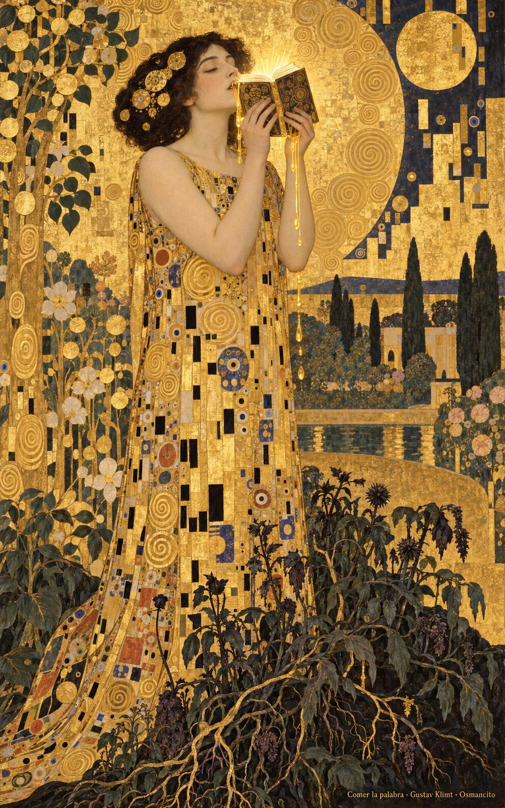

20 de noviembre de 2026
¡Buenos días!
Dulce y amarga
41
Tómalo y cómetelo.
Apocalipsis 10,9. Fuente
Que tomemos la palabra y la comamos: dulce como la miel cuando entra, amarga cuando baja y remueve lo acomodado. Que no la dejemos en el paladar, que baje a las entrañas y haga su trabajo. Que la casa del corazón vuelva a ser casa de oración y no cueva de negocios: echadas las mesas del afán, que quede limpia para el que enseña cada día, y que anunciemos con la vida lo que comimos.

- Jesús señala las mesas de los cambistas en el patio del templo y las palomas salen libres de las jaulas abiertas: Lucas 19, la casa que vuelve a ser casa de oración.

- La figura come el pequeño libro resplandeciente, del que caen hilos de miel mientras a sus pies crecen hierbas amargas: Apocalipsis 10, la palabra dulce al entrar y exigente al bajar.
¡Feliz viernes 20 de noviembre!
😊🙋♂
© 2026 Osmancito